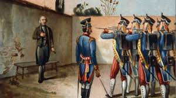

LA CAPTURA Y EJECUCION DE LOS PRIMEROS LIDERESLa captura y ejecución de los primeros líderes de la independencia de México ocurrió después de la derrota insurgente en la Batalla del Puente de Calderón en enero de 1811. Tras esta derrota, Miguel Hidalgo, Ignacio Allende, Juan Aldama y otros jefes decidieron retirarse hacia el norte del país con la intención de reorganizar sus fuerzas y buscar apoyo, incluso consideraban llegar a la frontera con Estados Unidos. Durante este trayecto, el grupo insurgente iba debilitado, desorganizado y con muchos hombres dispersándose constantemente. A pesar de ello, seguían siendo reconocidos como los principales líderes del movimiento. La situación era crítica, ya que los realistas los perseguían constantemente. Además, dentro del grupo había desacuerdos sobre el liderazgo. Allende, por ejemplo, había comenzado a cuestionar a Hidalgo. Todo esto los hacía cada vez más vulnerables. La retirada se volvió una huida difícil y sin rumbo claro. El peligro de ser capturados aumentaba con cada paso. Mientras avanzaban por el norte, los insurgentes confiaron en algunos contactos que supuestamente los ayudarían. Uno de ellos fue Ignacio Elizondo, quien aparentaba ser simpatizante del movimiento insurgente. Sin embargo, en realidad estaba del lado de los realistas y planeaba traicionarlos. Esta traición fue clave en la captura de los líderes insurgentes. El grupo no sospechó de sus verdaderas intenciones. Confiaron en él y en su ofrecimiento de apoyo. Esto permitió que la emboscada se organizara con facilidad. El contexto era de incertidumbre y cansancio. Los insurgentes bajaron la guardia. Se dirigían sin saberlo hacia una trampa. Así, Elizondo preparó el momento exacto para capturarlos. La traición marcó el destino de los líderes. |
 |
|
|---|---|---|
El 21 de marzo de 1811, en un lugar llamado Acatita de Baján, en el actual estado de Coahuila, se llevó a cabo la emboscada. Cuando los insurgentes llegaron al punto acordado, fueron sorprendidos por fuerzas armadas bajo el mando de Ignacio Elizondo. Sin posibilidad de defenderse adecuadamente, fueron rodeados y capturados. La sorpresa fue total. No pudieron organizar resistencia. Los líderes quedaron completamente vulnerables. Fueron detenidos sin un combate relevante. Este momento representó el fin de su libertad. La captura fue rápida pero decisiva. El movimiento insurgente perdió a sus principales figuras. Todo ocurrió de forma inesperada para ellos. Fue el resultado directo de la traición. Después de ser capturados, los insurgentes fueron desarmados y puestos bajo custodia. Sus seguidores también fueron detenidos en gran número. A partir de ese momento, quedaron bajo control del ejército realista. Fueron tratados como prisioneros importantes debido a su papel en la rebelión. Las autoridades los consideraban responsables de un levantamiento contra la corona española. Se les acusaba de traición y sedición. Desde ese instante, su destino parecía decidido. No se les permitió recuperar su libertad. Fueron vigilados constantemente. La situación ya no tenía marcha atrás. El control realista era absoluto. Se inició así el proceso que terminaría con sus vidas.
Posteriormente, los principales líderes fueron trasladados hacia la ciudad de Chihuahua. El viaje fue largo y difícil, bajo estricta vigilancia. Durante el trayecto, los líderes iban encadenados y custodiados por soldados. No se les permitía comunicarse libremente. Su traslado tenía como finalidad juzgarlos lejos de los principales centros insurgentes. Esto evitaba posibles rescates o levantamientos. El camino representó también un desgaste físico y emocional. Sabían que enfrentarían un juicio severo. La situación era cada vez más grave. El control sobre ellos era total. La esperanza de escapar prácticamente desapareció. Su destino quedaba en manos de las autoridades. Al llegar a Chihuahua, fueron encarcelados en condiciones estrictas. Se inició un proceso judicial en su contra. Fueron interrogados y acusados formalmente de delitos contra el gobierno colonial. Entre ellos estaban la rebelión, la traición al rey y la incitación a la violencia. Los juicios fueron rápidos y controlados por las autoridades españolas. No existía una defensa justa como se entiende hoy. Las decisiones ya estaban prácticamente tomadas. Hidalgo, por ser sacerdote, también enfrentó un juicio religioso. Este añadió gravedad a su situación. El proceso legal buscaba dar un ejemplo. Se pretendía frenar futuras rebeliones. Todo estaba encaminado hacia su condena.
Ignacio Allende, Juan Aldama y otros líderes militares fueron de los primeros en ser ejecutados. El 26 de junio de 1811 fueron fusilados en Chihuahua. Su ejecución fue pública y buscaba intimidar a la población. Los realistas querían demostrar que cualquier intento de rebelión sería castigado severamente. Sus cuerpos fueron tratados como ejemplo de castigo. Sus muertes representaron la eliminación de importantes figuras militares del movimiento insurgente. La noticia se difundió rápidamente. Esto generó temor pero también indignación en algunos sectores. Fue un golpe fuerte para la causa independentista. Sin embargo, no la detuvo por completo. Miguel Hidalgo fue mantenido con vida por más tiempo debido a su condición de sacerdote. Primero fue sometido a un proceso eclesiástico en el que le retiraron sus privilegios religiosos. Este acto era necesario para poder ejecutarlo como civil. Una vez concluido este proceso, se dictó su sentencia de muerte. Hidalgo enfrentó sus últimos días en prisión. Se dice que estuvo tranquilo y consciente de su destino. Sabía que su participación había cambiado la historia. A pesar de la derrota, su figura ya era simbólica. Su ejecución estaba programada. El momento final se acercaba inevitablemente. Todo formaba parte del castigo ejemplar.
El 30 de julio de 1811, Miguel Hidalgo fue ejecutado por fusilamiento en Chihuahua. Su muerte marcó el final de la primera etapa de la independencia. Fue un momento histórico de gran impacto. Después de su ejecución, su cuerpo fue decapitado. Su cabeza, junto con las de Allende, Aldama y Jiménez, fue enviada a Guanajuato. Allí fueron colocadas en la Alhóndiga de Granaditas. Este acto tenía como objetivo advertir a la población. Era una forma de infundir miedo y evitar nuevas rebeliones. Sin embargo, también los convirtió en símbolos. Su sacrificio fue recordado. Su muerte no acabó con la lucha. A pesar de la captura y ejecución de estos líderes, el movimiento insurgente no terminó. Otros líderes tomaron el relevo, como José María Morelos. Él reorganizó la lucha con mayor estrategia. La independencia continuó durante varios años más. La muerte de Hidalgo y sus compañeros fortaleció el sentido de lucha. Se convirtieron en mártires de la causa. Su ejemplo inspiró a otros a continuar. La historia de su captura y ejecución quedó como un momento crucial.